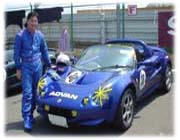
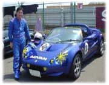
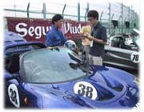
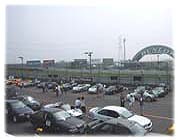

実は５月中頃に約６年乗っていた青いポルシェを売って、ロータスエリーゼ１１１ Ｓを買いました。もちろんまたソニックカラーの青。(^^)
なぜこの車を買ったか？ 今までポルシェとフェラーリに乗っていたんだけど、直線は車の性能で早いけどカーブはこわごわ曲がってたりして、
「せっかくスポーツカーに乗っているんだからもう少しスポーツ走行が出来るようになりたい」と思っていたんです。
そんな時、４月くらいに出ていた『ＴＩＰＯ』が、このロータスエリーゼの特集号だったので熟読していたら、なんかとても欲しくなってしまったのです。
前からとても良い車だと聞いていたので気にはなっていたんだけど、買おうとまでは思わなかったのです。この本を読んでいたら、
なんとエリーゼのドライビングスクールがあって、しかもその先生が、土屋圭市さんと飯田章さんという現役ドライバーが教えてくれる！
と書いてあったので、ますます欲しくなってしまった。
そして目黒通りにあるロータスカーズに行って、話をして試乗をさせてもらったら帰りには買っていました。(^_^;)
やっぱり試乗はしちゃいけませんね。(^^)
でも買って本当によかった！と思える車でとっても楽しいです。この車は何が凄いって、車重が６９０ｋｇしかないのです。
Ｆ１マシンも約６００ｋｇ位なので、同じぐらいの重さなのです。普通の車がだいたい１５００ｋｇ位あるので約半分。
なので、とってもコントロール性が良くて、動きがとっても良いんです。

 

で、買ってからこの日までに２回、筑波サーキットで土屋先生と飯田先生のエリーゼドライビングスクールを受講して、
この日は生まれて始めてのレースでした。
このレースのために、４点のシートベルト入れて、タイヤをＡＤＶＡＮのＡ０３８ＬＴＳというライトウエイト用のＳタイヤに替えて、
マフラーもスポーツ用に替えた。なんとこんな改造も生まれて初めての経験。
 そして、初レースと言うことで形から入ろうと言うことで、レーシングシューズとレーシンググローブとレーシングスーツに至るまで揃えて万全の体制をとってみました。(^_^;)
あと、忘れてならないのがヘルメットで、このヘルメットは知っている人がいるかもしれませんが、９２年のＦ１グランプリでアラン・プロストが被っていたヘルメットのデザインを、オーダーしてペインティングしてもらいました！ 本物のＦ１ドライバーのヘルメットのペイントもやっているトコロらしかったのでとても高かったけど、仕上がりはもう完璧で、すごくいい感じです。
メガドライブで『ソニック２』が出た頃に、アメリカやヨーロッパでメガドライブがかなり売れていたのもあって、セガがＦ１チームのウイリアムズのスポンサーをしていたんです。その関係でＦ１マシンにはソニックの足と手が描かれ、ウイングにはＳＥＧＡと描いてあり、ドライバーの被っているヘルメットのてっぺんに、このソニックが描かれていたのです。みなさん知ってました？
そして、初レースと言うことで形から入ろうと言うことで、レーシングシューズとレーシンググローブとレーシングスーツに至るまで揃えて万全の体制をとってみました。(^_^;)
あと、忘れてならないのがヘルメットで、このヘルメットは知っている人がいるかもしれませんが、９２年のＦ１グランプリでアラン・プロストが被っていたヘルメットのデザインを、オーダーしてペインティングしてもらいました！ 本物のＦ１ドライバーのヘルメットのペイントもやっているトコロらしかったのでとても高かったけど、仕上がりはもう完璧で、すごくいい感じです。
メガドライブで『ソニック２』が出た頃に、アメリカやヨーロッパでメガドライブがかなり売れていたのもあって、セガがＦ１チームのウイリアムズのスポンサーをしていたんです。その関係でＦ１マシンにはソニックの足と手が描かれ、ウイングにはＳＥＧＡと描いてあり、ドライバーの被っているヘルメットのてっぺんに、このソニックが描かれていたのです。みなさん知ってました？
いつかはこのヘルメットが欲しいと思っていたので、今回初レースを記念して作ってみました。


|